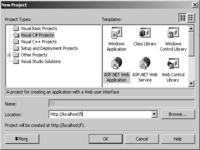

6.
Web
Controls
So far, we have been discoursing
about Controls that work with Windows Forms. This chapter plumbs into the arena
of Web controls, which are controls in a web form. They are sighted in a
browser and work on the Internet.
This project would be a C#
project, but with ASP.Net in place of a Windows Application. Without further
ado, simply run the empty project by clicking on the Debug menu, followed by
the Start option.
|
 |
|
|
Screen 6.1 |
Screen 6.2 |
The outcome is an empty screen.
However, on clicking the View Source, the following html file is put forth.
This file is sent across by the server to the browser.
View Source
<!DOCTYPE HTML PUBLIC "-//W3C//DTD HTML 4.0 Transitional//EN" >
<html>
<head>
<title>WebForm1</title>
<meta name="GENERATOR" Content="Microsoft Visual Studio 7.0">
<meta name="CODE_LANGUAGE" Content="C#">
<meta name=vs_defaultClientScript content="JavaScript">
<meta name=vs_targetSchema content="http://schemas.microsoft.com/intellisense/ie5">
</head>
<body MS_POSITIONING="GridLayout">
<form name="Form1" method="post" action="WebForm1.aspx" id="Form1">
<input type="hidden" name="__VIEWSTATE" value="dDwtMTI3OTMzNDM4NDs7Pg==" />
</form>
</body>
</html>
The URL written in the browser
by Visual Studio.Net is http://localhost/f1/WebForm1.aspx. This provides ample
grounds for belief that someone has created the above aspx file. We shall soon
unscramble the mystery behind the creation of this file.
The file encompasses the
mandatory DOCTYPE declaration, followed by the head tag. The contents of the
head tag are never displayed by the browser.
Coming on next are the meta-tags
in the form of name-value pairs, which the browser may or may not be able to
demystify. If the browser fails to comprehend the name-value pair, it quietly
ignores it without any fuss.
The body tag is followed by a
form tag called Form1. The form tag communicates
with the server using the POST method, and transmits the data file named
WebForm1.aspx across the browser.
There is a solitary input tag,
but since its type is hidden, it has no perceptible effect on the browser. The
name assigned to it is __VIEWSTATE. It has a value that is a GUID or a 128 bit,
which is used to uniquely track the individual connections made to the server.
This is how the server maintains state in the browser.
The home or root directory of
the IIS Web Server is c:\inetpub\wwwroot. Since the project is named as f1, the
directory created in the folder c:\inetpub\wwwroot is also assigned the name of
f1.
Visual Studio.Net displays a
blank screen. Further, clicking on the HTML tab brings up the same aspx file
named WebForm1.aspx, as depicted in screen 6.3.
|
|
|
Screen 6.3 |
WebForm1.aspx
<%@ Page language="c#" Codebehind="WebForm1.aspx.cs" AutoEventWireup="false" Inherits="f1.WebForm1" %>
<!DOCTYPE HTML PUBLIC "-//W3C//DTD HTML 4.0 Transitional//EN" >
<html>
<head>
<title>WebForm1</title>
<meta name="GENERATOR" Content="Microsoft Visual Studio 7.0">
<meta name="CODE_LANGUAGE" Content="C#">
<meta name=vs_defaultClientScript content="JavaScript">
<meta name=vs_targetSchema content="http://schemas.microsoft.com/intellisense/ie5">
</head>
<body MS_POSITIONING="GridLayout">
<form id="Form1" method="post" runat="server">
</form>
</body> </html>
In the above display, with the exception of one line, most of
it has already been covered earlier. We encounter the <% directive at the
beginning of any line, it connotes that the line contains C# code. The <%@
directive is an aspx directive. We will expound the Page directive in a while.
An aspx file is first converted
into a C# program. Thereafter, it is compiled into a dll, which is finally
executed by the Web Server. The job of the dll is to create an html page to be
dispatched across to the server, which redirects it to the browser.
Let us make headway towards our
first Web Form control.
a.cs
using System.Web.UI.WebControls;
public class aaa : WebControl
{
}
For a control to be a web
control, it must be derived from the WebControl class, and not from the Control
or UserControl class. After compiling the file, add it to the Customize dialog
box. This does not generate any error at all. However, when an effort is made
to place it in the form, an error is tossed at us, as seen in screen 6.4.
|
|
|
Screen 6.4 |
a.cs
namespace nnn
{
using System.Web.UI.WebControls;
public class aaa : WebControl
{
}
}
Now, modify the code to
incorporate the new lines. Then, delete the control from the toolbox and reload
it into the customize toolbox. The newly imported lines eliminate the error, as
visible in 6.5.
|
|
|
Screen 6.5 |
Thus, to write the smallest Web
Control, all that is required is a control with a base class of WebControl,
which should be placed in a namespace. The generated aspx file named
WebForm1.aspx contains lines that have been added by the framework.
WebForm1.aspx
<%@ Page language="c#" Codebehind="WebForm1.aspx.cs" AutoEventWireup="false" Inherits="f1.WebForm1" %>
<%@ Register TagPrefix="cc1" Namespace="nnn" Assembly="a" %>
<!DOCTYPE HTML PUBLIC "-//W3C//DTD HTML 4.0 Transitional//EN" >
<HTML>
<HEAD>
<title>WebForm1</title>
<meta name="GENERATOR" Content="Microsoft Visual Studio 7.0">
<meta name="CODE_LANGUAGE" Content="C#">
<meta name="vs_defaultClientScript" content="JavaScript">
<meta name="vs_targetSchema" content="http://schemas.microsoft.com/intellisense/ie5">
</HEAD>
<body MS_POSITIONING="GridLayout">
<form id="Form1" method="post" runat="server">
<cc1:aaa id="Aaa1" style="Z-INDEX: 101; LEFT: 126px; POSITION: absolute; TOP: 203px" runat="server" Width="185px" Height="43px"></cc1:aaa>
</form>
</body>
</HTML>
View Source
<!DOCTYPE HTML PUBLIC "-//W3C//DTD HTML 4.0 Transitional//EN" >
<HTML>
<HEAD>
<title>WebForm1</title>
<meta name="GENERATOR" Content="Microsoft Visual Studio 7.0">
<meta name="CODE_LANGUAGE" Content="C#">
<meta name="vs_defaultClientScript" content="JavaScript">
<meta name="vs_targetSchema" content="http://schemas.microsoft.com/intellisense/ie5">
</HEAD>
<body MS_POSITIONING="GridLayout">
<form name="Form1" method="post" action="WebForm1.aspx" id="Form1">
<input type="hidden" name="__VIEWSTATE" value="dDwtMTQwMTQ5OTg0OTs7Pg==" />
<span id="Aaa1" style="height:43px;width:185px;Z-INDEX: 101; LEFT: 126px; POSITION: absolute; TOP: 203px"></span>
</form>
</body>
</HTML>
A Register directive gets
appended during the creation of a user-defined web control. This directive
specifies the name of the Namespace as nnn. It also indicates that the assembly
points towards the file that encloses the code for the control. If you examine
the bin folder within f1, you would stumble upon the file a.dll. This is
because the control is located in the file a.dll in the C:\a1 folder. The
TagPrefix property has a value of cc1, which is generated by the system.
An aspx file contains either the
html tags or a C# program. The control is therefore represented by a tag. In
the form tag, the control is represented by the tag cc1:aaa, since the code for
the control has been placed in the class aaa.
The control is assigned a unique
name, when it is prefixed by a machine-generated tag. So, if we call the Button
class in lieu of the aaa class, it will not interfere with Button class that is
already present. This is because the control would be identified as ccc1:Button
and not as Button. This tag prefix acts as a namespace, thereby avoiding any
potential name conflicts.
Here, a few more properties have
been added to the control. The first is the name or the id of the control aaa1.
All references to the control in the aspx file are made using the id. Then, we
come across a long style property, which determines the process of rendering
the control on the screen.
The property
runat="server" directs the server to maintain state of this control.
The Width property keeps track of the width of the control. In the html file, the control becomes a span
tag with the same id of Aaa1. The style property now includes the width too.
To reiterate, any control that
is incorporated into the form, gets added to the file WebForm1.aspx. On
executing the program, the aspx file first becomes a C# program. Then, it is
compiled into a dll, which is finally executed. The final outcome is that an
html file is transported across from the web server to the browser.
Along the way, the program that
executes the dll, also runs the control stored in the a.dll file. Any html
output that this control produces, is also dispatched to the web server, which
re-directs it to the browser.
a.cs
namespace nnn
{
using System.Web.UI;
using System.Web.UI.WebControls;
public class aaa : WebControl
{
protected override void Render(HtmlTextWriter o)
{
o.Write("vijay");
}
}
}
The above control displays 'vijay'
in the browser window, as shown in the screen 6.6. Thus, the control is updated
to exhibit some html text.
|
|
|
Screen 6.6 |
View Source
<form name="Form1" method="post" action="WebForm1.aspx" id="Form1">
vijay
</form>
The main objective of a web
control is to produce html. Earlier, the html file revealed a span tag;
however, it is the text 'vijay' that it embodies now. This could only be
achieved with the help of the Render function. This function gets called
whenever some html text needs to be evinced by the control.
The Render function inhabiting
the base class WebControl is overridden in the above control. It takes a
parameter of type HtmlTextWriter class, which is thereafter used to create the
html content. The string passed to the Write function is finally sent across to
the Web Server. Since the string text in the above control is 'vijay', the text
'vijay' is evident in the browser output.
If the above explanation has
flummoxed you, we shall simplify things for you. Create the following file
named a.aspx in the folder: c:\inetpub\wwwroot.
a.aspx
<%@ Register TagPrefix="ddd" Namespace="nnn" Assembly="a" %>
<form id="Form1" method="post" runat="server">
<ddd:aaa id="Aaa1" style="Z-INDEX: 101; LEFT: 152px; POSITION: absolute; TOP: 181px" runat="server" Width="146px">
</ddd:aaa>
</form>
The above aspx file is rendered
in the browser by specifying the URL as http://localhost/a.aspx in the address
bar. Prior to entering the URL, copy the file a.dll from the a1 folder to the
c:\inetpub\wwwroot\bin folder. Once this is done, open the aspx file in the
browser using the URL. It will display the text 'vijay'. In the aspx file, the
aaa control need not possess any of the other properties. It could have been
written as :
<ddd:aaa runat="server" />.
This functionality is akin to
that of Visual Studio.Net. In the framework, the controls are placed on the
form and the system generates the aspx file. This aspx file comes into view
when the html tab is clicked on.
The control stored in the a.dll
file is also copied into the bin folder. Visual Studio.Net then runs the
WebForms1.aspx in the browser. It is easier to work with Visual Studio.Net
while creating controls.
a.cs
namespace nnn
{
using System.ComponentModel;
using System.Web.UI;
using System.Web.UI.WebControls;
public class aaa : WebControl
{
int b1;
[Description("Vijay Mukhi")]
public int a1
{
get
{
return b1;
}
set
{
b1 = value;
}
}
protected override void Render(HtmlTextWriter o)
{
o.Write(a1.ToString());
}
}
}
WebForm1.aspx
<cc1:aaa id="Aaa1" style="Z-INDEX: 101; LEFT: 121px; POSITION: absolute; TOP: 181px" runat="server" Width="60px" Height="43px" a1="100">
Internet Explorer
100
The above control has a property
called a1 of type int. The variable b1 stores its state. In the Render function,
the value of this property is displayed. Place the control aaa in the form, as
shown in screen 6.7.
|
|
|
|
Screen 6.7 |
Screen 6.8 |
The property appears in the Misc
section. Now, change the value of the property a1 to 100. The effect of this
amendment is revealed in screen 6.8.
The control displays the value
of 100, since the property a1 has been specified as a parameter to the Write
function. However, the aspx file simply shows the property a1 being set to a
value of 100. The html file also displays a value of 100.
The Description attribute is
added in a manner similar to that employed by Windows Forms to display help
text. This attribute from System.ComponentModel never modifies its behavior,
whether it is applied to Windows Forms or to Web Forms.
a.cs
namespace nnn
{
using System.Globalization;
using System;
using System.IO;
using System.ComponentModel;
using System.Web.UI;
using System.Web.UI.WebControls;
public class bbb : TypeConverter
{
public override bool GetPropertiesSupported (ITypeDescriptorContext c)
{
abc("GetPropertiesSupported");
return true;
}
public override bool CanConvertFrom(ITypeDescriptorContext c,Type t)
{
abc("CanConvertFrom " + t.ToString());
return true;
}
public override bool CanConvertTo(ITypeDescriptorContext c,Type t)
{
abc("CanConvertTo " + t.ToString());
return true;
}
public override object ConvertTo(ITypeDescriptorContext c,CultureInfo cu, object v, Type t)
{
abc("ConvertTo " + t.ToString() + " " + v.ToString());
yyy a1 = (yyy)v;
string s1 = a1.i + "-" ;
return s1;
}
public override object ConvertFrom(ITypeDescriptorContext c,CultureInfo cu, object o)
{
abc("ConvertFrom " + o.ToString());
string s1 = (string)o;
char [] c1 = new char[] {'-'};
string[] v = s1.Split(c1);
abc("i=" + v[0] );
int a1;
a1 = int.Parse(v[0]);
yyy y1 = new yyy(a1);
abc("ConvertFrom End");
return y1;
}
public static void abc(string s)
{
FileStream fs = new FileStream("c:\\a1\\a.txt", FileMode.Append, FileAccess.Write);
StreamWriter w = new StreamWriter(fs);
w.WriteLine(s);
w.Flush();
w.Close();
}
}
public class yyy
{
public int i1;
public yyy(int k)
{
i1 = k;
}
public int i
{
get
{
return i1;
}
set
{
i1 = value;
}
}
}
public class aaa : WebControl
{
yyy b1 = new yyy(1);
[TypeConverter(typeof(bbb))]
public yyy a1
{
get
{
return b1;
}
set
{
b1 = value;
}
}
protected override void Render(HtmlTextWriter o)
{
o.Write(b1.i1.ToString());
}
}
}
a.txt
CanConvertFrom System.String
GetPropertiesSupported
ConvertTo System.String nnn.yyy
WebForm1.aspx.cs
using System;
using System.Collections;
using System.ComponentModel;
using System.Data;
using System.Drawing;
using System.Web;
using System.Web.SessionState;
using System.Web.UI;
using System.Web.UI.WebControls;
using System.Web.UI.HtmlControls;
namespace f1
{
public class WebForm1 : System.Web.UI.Page
{
protected nnn.aaa Aaa1;
public WebForm1()
{
Page.Init += new System.EventHandler(Page_Init);
}
private void Page_Load(object sender, System.EventArgs e)
{
}
private void Page_Init(object sender, EventArgs e)
{
InitializeComponent();
}
#region Web Form Designer generated code
private void InitializeComponent()
{
this.Load += new System.EventHandler(this.Page_Load);
}
#endregion
}
}
|
|
|
Screen 6.9 |
The above control has the
property a1 of type yyy. This class contains a property named i1. Thus, when the
control is placed in the form, a plus sign gets displayed in front of the
property.
|
|
|
Screen 6.10 |

Clicking on the plus sign
elicits the display of the property i1. When this value is changed to 10000, as
illustrated in screen 6.10, the control updates itself. All the same, the
attribute TypeConverter must still be added.